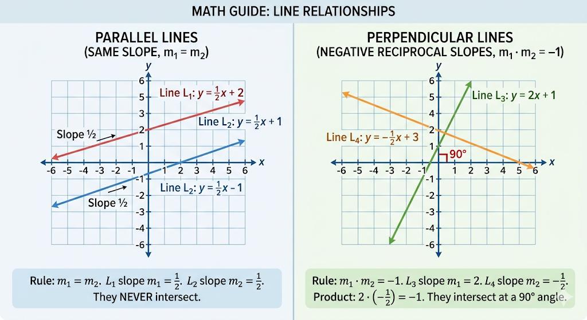

This is the most common way to write a linear equation. • $y$: The dependent variable (Vertical axis). • $x$: The independent variable (Horizontal axis). • $m$: The Slope or Gradient (how steep the line is). • $c$: The y-intercept (where the line crosses the vertical axis). [Image of a linear equation graph showing slope and y-intercept]
If you have two points $(x_1, y_1)$ and $(x_2, y_2)$, use this formula: $m = \frac{y_2 - y_1}{x_2 - x_1}$ • A positive slope goes up from left to right. • A negative slope goes down from left to right. [Image showing positive, negative, zero, and undefined slopes] s Line: The object is moving back toward the start.
If you know one point $(x_1, y_1)$ and the slope ($m$), use: $y - y_1 = m(x - x_1)$
Equations are often written as: $Ax + By + C = 0$
Here is an example of a Travel Graph:
[Image comparing parallel and perpendicular lines on a coordinate plane]
